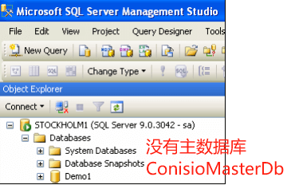

无法将库添加到主服务器
您在同一台服务器上重新安装 Microsoft SQL，但当您尝试生成库时，您会收到以下错误消息：
“无法将库’[VaultName]’添加到 SOLIDWORKS PDM 主数据库’ConisioMasterDb’’。
原因
当存在未附加到SQL Server的ConisioMasterDb数据库文件时，且数据库数据文件夹里却有主数据库文件时就会发生这种情况。
在没有ConisioMasterDb数据库的服务器上创建新的文件库时，该数据库将尝试创建ConisioMasterDb库文件（.mdf和.ldf)，如果在数据库文件中存在同名的现有文件文件夹，则创建失败。
造成这种情况的原因很可能是卸载了以前托管文件库数据库的SQL服务器并重新安装，从而删除(分离)所有用户定义的数据库(即文件库数据库和ConisioMasterDb数据库)。重新安装SQL服务器不会自动重新连接到孤立的数据库文件。
MDF（Master Database Fie）包含数据库的所有主要信息
LDF 跟踪数据库中所做的更改。
方法
如果以前安装了 SQL，则这两个文件可能存在，并且在创建第一个 Vault 期间无法覆盖。要解决此问题，请执行以下操作：
1、首先确保你有SQL和PDM的备份，
2、打开【Microsoft SQL Server Management】确认没有ConisioMasterDb数据库连接到创建失败的SQL服务器。删除“创建失败”的PDM库，如果有的话。
3、在删除PDM库时，建议在删除对话框中选择“Close existing connections”。
删除 ConisioMasterDb.mdf 和 ConisioMasterDb.ldf。可以从SQL【服务器属性-数据库设置】里找到文件位置。默认情况下，这些文件位于：
1 | C:\Program Files\Microsoft SQL Server\MSSQL15.MSSQLSERVER\MSSQL\DATA |
删除这些文件后，尝试再次创建新的PDM文件库，它现在应该成功完成。
方法2
请注意。如果在卸载和重新安装时意外地得到孤立的数据库文件SQL服务器-(很可能)重新附加到数据库。例如，如果你有一个工作文件库设置，然后重新安装SQL服务器，之后无法使用文件库。
在升级或重新安装SQL服务器之前，您应该始终执行任何SQL数据库的备份软件。
若要重新附加到数据库文件，请右键单击数据库节点并选择Attach。
浏览到孤立的.mdf文件并重新附加到它。